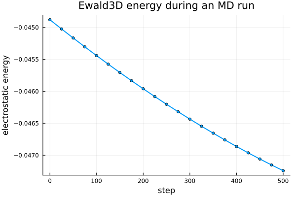
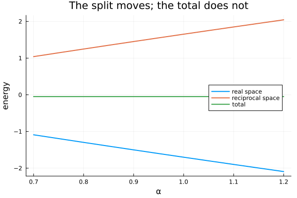
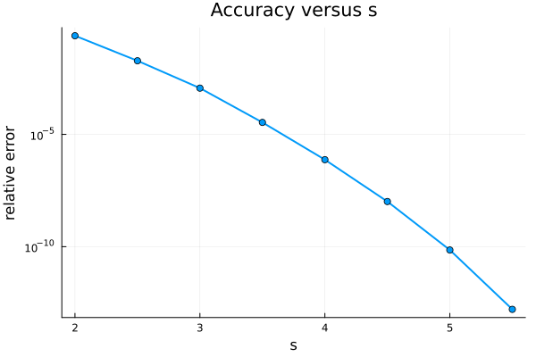
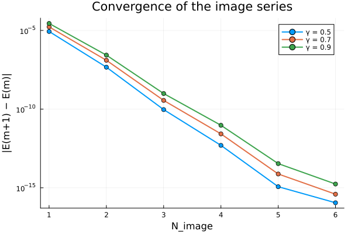

Electrostatics
ExTinyMD's electrostatics standard library implements Ewald summation and the image-charge method (ICM) for dielectrically confined slabs. Every method has two interfaces:
- a core API that takes a plan object plus plain arrays of positions and charges, and requires no ExTinyMD type at all;
- an MD adapter that wraps the same plan object as an
AbstractInteractionso it can be added to anMDSysand driven bysimulate!.
The two-layer API
The core API is a plan object (built once, holding cutoffs, k-vectors, and scratch buffers) queried with coulomb_energy, coulomb_force and coulomb_force!:
using ExTinyMD, StaticArrays
n, L = 100, (20.0, 20.0, 20.0)
poses = [SVector(rand() * L[1], rand() * L[2], rand() * L[3]) for _ in 1:n]
charges = [isodd(i) ? 1.0 : -1.0 for i in 1:n]
inter = Ewald3D(n, L; α = 0.5, s = 4.0) # r_c = s/α = 8.0, below min(L)/2 = 10.0
E = coulomb_energy(inter, poses, charges)
F = coulomb_force(inter, poses, charges)Nothing above is an ExTinyMD Atom, Boundary, or MDSys — poses and charges are plain Vectors. This is deliberate: the core layer can be tested, benchmarked, and used from a plain script without any MD framework at all.
r_c = s/α must be strictly less than half the smallest periodic box side, i.e. s/α < min(L)/2 (for Ewald2D and the ICM methods, only L[1] and L[2] count, since z is not periodic there). Picking α and s without checking this does not give a slightly wrong answer — it raises ArgumentError: UNIT CELL CHECK FAILED ... must be greater than 2*cutoff from CellListMap when the plan object is built. See Parameter selection below.
The same inter object also plugs into an ordinary MDSys. The adapter (src/interactions/electrostatics/adapter.jl) implements update_acceleration! and energy for it exactly like any other interaction — gathering positions and charges from sys/info in particle-slot order and calling the same coulomb_* functions above:
using ExTinyMD, StaticArrays, Random
n, L = 100, 20.0
boundary = CubicBoundary(L)
atoms = create_atoms([(n ÷ 2, Atom(type = 1, mass = 1.0, charge = 1.0)),
(n ÷ 2, Atom(type = 2, mass = 1.0, charge = -1.0))])
info = SimulationInfo(n, atoms, (0.0, L, 0.0, L, 0.0, L), boundary; min_r = 1.0, temp = 1.0)
inter = Ewald3D(n, (L, L, L); α = 0.5, s = 4.0)
finder = CellList3D(info, inter.short.r_c, boundary, 1)
sys = MDSys(
n_atoms = n, atoms = atoms, boundary = boundary,
interactions = [(inter, finder)],
loggers = [TemperatureLogger(100; output = false)],
simulator = VerletProcess(dt = 0.001),
)
simulate!(sys.simulator, sys, info, 1000)update_acceleration! is now called for you every step; no other code path needs to know that the interaction is electrostatic. Internally, the adapter gathers positions and charges from sys/info in particle-slot order with two small helpers:
ExTinyMD.gather_positions! — Function
Gather positions in slot order into buf.
ExTinyMD.gather_charges! — Function
Gather charges in slot order into buf.
ExTinyMD.EwaldInteraction — Type
EwaldInteraction(short, long, n_atoms)An Ewald-split electrostatic interaction: a real-space kernel plus a reciprocal-space solver. Composing them here rather than registering two separate entries in sys.interactions keeps the pair together and hands the MD adapter a single object.
Query it with coulomb_energy and coulomb_force for standalone use, or add it to an MDSys and let the adapter drive it.
ExTinyMD.coulomb_energy — Function
coulomb_energy(interaction, poses, charges; neighbor_list = nothing) -> TTotal electrostatic energy. poses is AoS; no ExTinyMD type is required.
ExTinyMD.coulomb_force — Function
coulomb_force(interaction, poses, charges; neighbor_list = nothing) -> Vector{SVector{3,T}}Allocating form of coulomb_force!. In an MD loop prefer the in-place version, or let the adapter reuse interaction.force_buffer.
ExTinyMD.coulomb_force! — Function
coulomb_force!(F, interaction, poses, charges; neighbor_list = nothing) -> FTotal electrostatic force, written into F. F is zeroed first, then the short- and long-range parts accumulate into it.
ExTinyMD.Ewald3D — Function
Ewald3D(n_atoms, L; α, s, ϵ = 1.0, ϵ_inf = Inf)Standard Ewald summation for a triply periodic system. α splits real and reciprocal space, s sets the accuracy (r_c = s/α, k_c = 2αs).
julia> using StaticArrays
julia> inter = Ewald3D(2, (10.0, 10.0, 10.0); α = 1.0, s = 4.0);
julia> poses = [SVector(0.0, 0.0, 0.0), SVector(5.0, 0.0, 0.0)];
julia> round(coulomb_energy(inter, poses, [1.0, -1.0]); digits = 6)
-0.021815ExTinyMD.Ewald2D — Function
Ewald2D(n_atoms, L; α, s, ϵ = 1.0)Exact Ewald summation for a slab periodic in x and y and free in z. L[3] is the extent used for the real-space neighbour search, not a period.
O(N²K) — use it as the quasi-2D accuracy reference, and for production runs on large systems reach for QuasiEwald.jl or SoEwald2D.jl.
ExTinyMD.Periodic3D — Type
Periodic3D()Boundary convention for a triply periodic box: the minimum-image displacement wraps all three axes. Used by Ewald3D.
ExTinyMD.PeriodicQ2D — Type
PeriodicQ2D()Boundary convention for a quasi-2D slab: the minimum-image displacement wraps x and y only, z is unwrapped. Used by Ewald2D and the ICM methods.
Method selection
| Boundary condition | Dielectric walls | Method | Cost | Notes |
|---|---|---|---|---|
| Triply periodic | none | Ewald3D | O(N·K) | reference implementation |
| Slab, periodic in x,y | none | Ewald2D | O(N²K) | exact; accuracy reference only |
| Slab, periodic in x,y | confined | ICMEwald2D | O(N²K) | exact for confined slabs |
| Slab, periodic in x,y | confined | ICMEwald3D | O(N·K) | Ewald3D + ELC; faster, approximate in N_pad |
N is the particle count and K the number of reciprocal-space vectors kept below the cutoff k_c. A particle-mesh method, PME3D, using FINUFFT for O(N log N) scaling on large triply-periodic systems, is planned for a later phase and is not yet implemented — do not look for it in this version.
Use Ewald2D only as an accuracy reference for small systems: its O(N²K) direct double sum over all particle pairs makes it unsuitable for production work. For large quasi-2D systems without dielectric walls, reach for QuasiEwald.jl or SoEwald2D.jl instead.
Parameter selection
Every method here is built from a splitting parameter α and a dimensionless accuracy parameter s, related to the real- and reciprocal-space cutoffs by
r_c = s / α k_c = 2 α s(see ewald_cutoffs). Larger s means smaller truncation error — roughly exp(-s²) — in both spaces at once; s = 4 gives an error near 1e-7 and is a reasonable default. α only trades work between real and reciprocal space: increasing α shrinks r_c (fewer real-space pairs) while growing k_c (more k-vectors), and vice versa. The total energy must not depend on it.
That last property is also the recommended self-check for a new parameter choice: since the split point between real and reciprocal space is arbitrary, if two different α (at fixed s) give different total energies, something is wrong with the parameters or the setup, not with the physics. Measured on this implementation: Ewald3D's total energy is independent of α to about 1e-8 at s = 4 (in practice closer to 1e-9 in the cases checked), and Ewald2D agrees to the same order.
total3d(α) = coulomb_energy(Ewald3D(n, L; α = α, s = 4.0), poses, charges)
total3d(0.45), total3d(0.5), total3d(0.55) # r_c = 8.89, 8.0, 7.27 (all < min(L)/2 = 10); should agree to ~1e-8ExTinyMD.ewald_cutoffs — Function
ewald_cutoffs(s, α) -> (r_c, k_c)Real- and reciprocal-space cutoffs from the splitting parameter α and the dimensionless accuracy parameter s: r_c = s/α, k_c = 2αs. Larger s means more accuracy and more work in both spaces. This convention is shared with EwaldSummations, QuasiEwald, SoEwald2D and ParticleMeshEwald, so parameters transfer between them unchanged.
All the methods here also assume overall charge neutrality: Ewald summation of a non-neutral system is only conditionally convergent and its energy picks up a box-volume-dependent offset. Check with check_neutrality before trusting an energy from an unfamiliar system.
ExTinyMD.check_neutrality — Function
check_neutrality(charges; atol) -> ΣqReturn the net charge, warning once when it is non-zero. Ewald summation of a non-neutral system is conditionally convergent and picks up a box-volume-dependent offset, which shows up as an energy that drifts with L rather than as an error.
r_c is not free of the box
Because r_c = s/α, the pair (α, s) is not independent of the box: r_c must be strictly less than half the smallest periodic side, i.e.
s / α < min(L) / 2For Ewald2D, ICMEwald2D and ICMEwald3D only L[1] and L[2] enter this bound, since the z axis is not periodic (for ICMEwald3D this applies to the unpadded slab size passed in, not the internal z-padded box used for ELC). Violating the bound does not silently degrade accuracy — CellListMap, which builds the real-space neighbour list, refuses to construct a unit cell where the cutoff exceeds half a side, and raises
ArgumentError: UNIT CELL CHECK FAILED: unit cell dimension ... must be greater than 2*cutoffThis single constraint accounted for every failing parameter set in the original design draft of this library, so it is worth checking first whenever a construction call raises anything unexpected.
The prefactor asymmetry
Reading the source, the long-range prefactors look inconsistent with the short-range one. They are not — the 4π from Gaussian units is folded differently into each piece:
EwaldShort(real space, both 3D and the ICM real-space kernel) carries1/(4πϵ)explicitly.Ewald2DLongcarries1/ϵ— the4πis already absorbed into the in-plane reciprocal-space expressions it evaluates.Ewald3DLongis written as1/(2Vϵ)— again with the4πfolded in, alongside the1/2from the k-space sum running over a fullk ↔ -k-symmetric set.
The α-independence check above is exactly the test that pins this normalisation: if the prefactors of the short- and long-range parts of a method disagreed, the total energy would visibly drift with α, since more of the energy would shift into whichever piece carries the wrong constant.
ExTinyMD.EwaldShort — Type
EwaldShort(n_atoms, L; α, s, ϵ = 1.0, convention = Periodic3D())Real-space part of an Ewald split, shared by every method in this library:
E_s = 1/(4πϵ) [ Σ_{i<j, r<r_c} q_i q_j erfc(α r_ij)/r_ij − (α/√π) Σ_i q_i² ]convention selects which axes wrap — Periodic3D for a triply periodic box, PeriodicQ2D for a slab periodic in x and y only.
The struct owns a CellListMap neighbour list so that short_energy and short_force! allocate nothing after construction. Pass neighbor_list = ... to reuse a list maintained elsewhere, as the MD adapter does.
ExTinyMD.short_energy — Function
short_energy(short, poses, charges; neighbor_list = nothing) -> TReal-space Ewald energy. poses is AoS — any vector whose elements support p[1], p[2], p[3].
ExTinyMD.short_force! — Function
short_force!(F, short, poses, charges; neighbor_list = nothing)Accumulate the real-space force into F. Does not zero F first — the composite interaction zeroes once and lets short and long parts accumulate.
ExTinyMD.Ewald3DLong — Type
Ewald3DLong(n_atoms, L; α, s, ϵ = 1.0, ϵ_inf = Inf)Reciprocal-space part of the triply periodic Ewald sum, evaluated as a direct sum over the k-set:
E_l = 1/(2Vϵ) Σ_{0<|k|≤k_c} |ρ_k|² exp(−k²/4α²)/k², ρ_k = Σ_j q_j exp(i k·r_j)plus the surface (dipole) term |P|²/(2Vϵ(2ϵ_inf+1)) with P = Σ_j q_j r_j. ϵ_inf = Inf is the conducting (tin-foil) boundary and drops the surface term; finite ϵ_inf applies the correction for a medium of that permittivity at infinity.
Cost is O(N·K). For large systems use the FINUFFT-backed PME3D instead, which computes the same quantity with the same normalisation.
ExTinyMD.Ewald2DLong — Type
Ewald2DLong(n_atoms, L; α, s, ϵ = 1.0)Reciprocal-space part of the exact Ewald sum for a slab periodic in x and y and free in z. For each in-plane wavevector k:
E_k = 1/ϵ Σ_i Σ_j q_i q_j cos(k·ρ_ij)
[ e^{k z_ij} erfc(k/2α + α z_ij) + e^{−k z_ij} erfc(k/2α − α z_ij) ]
/ (8 L_x L_y k)
E_k0 = −1/ϵ Σ_i Σ_j q_i q_j [ e^{−(α z_ij)²}/(α√π) + z_ij erf(α z_ij) ]
/ (4 L_x L_y)The long-range prefactor is 1/ϵ, not 1/(4πϵ) — the 4π is already folded into the expressions above. The short-range part of the same method does carry 1/(4πϵ). This asymmetry is deliberate; α-independence of the total energy is the test that pins it.
Cost is O(N²K): this is the exact 2D sum, intended as the accuracy reference for quasi-2D systems rather than as a production method for large N.
ExTinyMD.long_energy — Function
long_energy(long, poses, charges; n_target = long.n_atoms) -> TReciprocal-space Ewald energy plus the dipole surface term. n_target lets the targets (the first n_target entries of poses/charges) differ from the sources (all long.n_atoms of them) — used by the image-charge method (Task 8), where real particles are targets and all reflected charges are sources. When n_target == long.n_atoms (the default) the two coincide and this reduces to the ordinary Ewald energy.
long_energy(long::Ewald2DLong, poses, charges; n_target = long.n_atoms) -> TReciprocal-space Ewald energy for the quasi-2D slab. n_target lets the targets (the first n_target entries of poses/charges) differ from the sources (all long.n_atoms of them) — used by the image-charge method (Task 8), where real particles are targets and all reflected charges are sources. When n_target == long.n_atoms (the default) the two coincide and this reduces to the ordinary Ewald2D energy.
ExTinyMD.long_force! — Function
long_force!(F, long, poses, charges; n_target = long.n_atoms)Accumulate the reciprocal-space force into F. Does not zero F first. Sources span all long.n_atoms charges; the force is written only for the first n_target of them, using the full coefficient (no factor of ½) — the image-charge convention, self-consistent because an image moves at twice the rate of its source.
long_force!(F, long::Ewald2DLong, poses, charges; n_target = long.n_atoms)Accumulate the reciprocal-space force into F. Does not zero F first. Sources span all long.n_atoms charges; the force is written only for the first n_target of them, using the full coefficient (no factor of ½) — the image-charge convention, self-consistent because an image moves at twice the rate of its source.
ICM guidance
ICM and its two constructors, ICMEwald2D and ICMEwald3D, model a slab confined between two dielectric walls by reflecting each real particle into an image series along z (icm_reflect!, internal).
ICM requires every real particle's z coordinate to lie within [0, L[3]]. The reflection recurrence (z_up = 2L_z - z, z_down = -z) and ICMShort's cell-list z-padding both assume this; nothing in the code enforces it. In a free-z MD run a particle can drift outside that range, at which point the image series no longer represents the physical reflection and the resulting energies and forces are meaningless. Confine z, e.g. with a wall potential or reflecting boundary, if particles are not otherwise guaranteed to stay inside [0, L[3]].
coulomb_energy and coulomb_force! for ICM both take a neighbor_list keyword for interface parity with EwaldInteraction, but they never use it: ICM builds and maintains its own cell list (via ICMShort) over the reflected configuration, which no externally supplied neighbour list can substitute for (the reflected positions do not exist until coulomb_energy builds them). This is deliberate, not an oversight.
γ = (γ_up, γ_down)are the dielectric contrast ratios at the upper and lower walls, conventionallyγ = (ϵ_mid - ϵ_out) / (ϵ_mid + ϵ_out)for each interface.γ = 0is an index-matched (invisible) wall;γ → ±1approaches a perfect conductor or insulator.N_imagesets how many reflections deep the image series goes. Each increment adds2nmore image charges (n= number of real particles) and the reflection recurrence shows the series converging geometrically inγ_up * γ_down, so a handful of images is usually enough once|γ_up * γ_down| < 1.N_pad, used only byICMEwald3D, controls how much the z-period of the padded box is inflated (L_pad[3] = (2·N_pad + 1)·L[3]) before the slab is treated as ordinary triply-periodic Ewald3D plus an ELC correction.N_padmust be large enough that periodic replicas of the whole image stack fail to interact — not merely the real slab. The image stack already spans(2·N_image + 1)·L[3]in z, so aN_padsized only for the bare slab under-pads onceN_imageis not tiny.Measured on this implementation, comparing
ICMEwald2D(exact) againstICMEwald3D(Ewald3D + ELC) for the same system:N_imageN_paddisagreement 3 1 9.4e-3(too small — not an algorithm error)3 2 4.7e-83 3 4.8e-85 2 8.5e-4(still too small)5 3 converges to the same order as N_image = 3, N_pad ≥ 2In short: start from
N_pad = 2and re-check againstICMEwald2D(or watch the energy stabilise asN_padincreases) wheneverN_imagegrows past 3.
ExTinyMD.ICM — Type
ICM(long, short, γ, N_image, n_atoms, L; elc = false, N_pad = 0)Image-charge method for a slab between two dielectric walls. The long-range solver long is evaluated on the reflected configuration and its forces are kept for the real particles only; short is the split real-space kernel.
Set elc = true with N_pad > 0 for the triply periodic + electrostatic layer correction route, in which case long must be an Ewald3DLong built for the z-padded box.
ExTinyMD.ICMShort — Type
ICMShort(n_atoms, L; α, s, ϵ = 1.0, N_image)Real-space kernel for ICM. Unlike EwaldShort it must distinguish real–real from real–image pairs: real–image energies carry a factor ½, real–image forces accumulate on the real particle only, and the self-energy is summed over real particles only.
ExTinyMD.ICMEwald2D — Function
ICMEwald2D(n_atoms, L; α, s, γ, N_image, ϵ = 1.0)Image-charge method combined with the exact Ewald2D sum, for a slab confined by two dielectric interfaces.
ExTinyMD.ICMEwald3D — Function
ICMEwald3D(n_atoms, L; α, s, γ, N_image, N_pad, ϵ = 1.0)Image-charge method combined with Ewald3D plus the electrostatic layer correction. The slab is embedded in a box padded to (2*N_pad + 1) * L[3] in z and treated as triply periodic; the ELC slab term removes the spurious interaction between periodic replicas.
Error estimates
The following closed-form error estimates are not part of the ExTinyMD source — no code path in this phase calls them — but are reproduced here as sizing guidance, ported from EwaldSummations.jl/src/error_estimate.jl. They are derived in Gao, Zhou, Gan & Liang, "Accurate Error Estimates and Optimal Parameter Selection in Ewald Summation for Dielectrically Confined Coulomb Systems", arXiv:2503.18126.
Lx, Ly are the in-plane box lengths, H the slab half-thickness (or wall separation, depending on convention — see the paper), ϵ the background permittivity, Cq a system-dependent charge-magnitude constant, and gu, gd the two wall contrast ratios (γ_up, γ_down above).
# Truncation error of the image-charge series, after keeping M reflections.
function icm_energy_error(Lx, Ly, H, M, ϵ, Cq, gu, gd)
return (8 * π^2 / (Lx * Ly * ϵ)) *
(Cq * (abs(gu * gd))^(floor((M + 1) / 2)) *
exp(-(4 * π * H * floor((M + 1) / 2)) / max(Lx, Ly))) /
(1 - abs(gu * gd) * exp(-(4 * π * H) / max(Lx, Ly)))
end
# Error from the ELC slab correction alone (periodic replicas along z),
# for a padded box of height Lz.
function elc_energy_error(Lx, Ly, Lz, H, ϵ, Cq)
t = 4 * π^2 * Cq / (ϵ * Lx * Ly * (1 - exp(-(2 * π * Lz) / max(Lx, Ly))))
return t * exp(-(2 * π * (Lz - H)) / max(Lx, Ly)) / (Lz - H)
end
# Combined error when ICM (M reflections) and ELC (padded height Lz) are both in play,
# i.e. the ICMEwald3D route.
function icm_elc_energy_error(Lx, Ly, Lz, H, M, ϵ, Cq, gu, gd)
t = 4 * π^2 * Cq / (ϵ * Lx * Ly * (1 - exp(-(2 * π * Lz) / max(Lx, Ly))))
e = t * exp(-(2 * π * (Lz - H)) / max(Lx, Ly)) / abs(Lz - H)
for l in 1:M
Cl = abs(gu^(ceil(l / 2)) * gd^(floor(l / 2))) +
abs(gu^(floor(l / 2)) * gd^(ceil(l / 2)))
e += t * Cl * exp(-(2 * π * (Lz - (l + 1) * H)) / max(Lx, Ly)) /
abs(2 * (Lz - (l + 1) * H))
end
e += t * 4 * exp(-(2 * π * Lz) / max(Lx, Ly)) /
(Lz * (1 - exp(-(4 * π * H) / max(Lx, Ly))))
return e
endUse these to pick M (N_image) and the padding depth analytically rather than by trial and error; the empirical ICM guidance above is a starting point, not a substitute, for a system whose accuracy requirement is known in advance.
Worked examples
Every figure below is generated when this page is built, so the numbers are whatever the current code actually produces.
A charged system under MD
A molten-salt-like box of equal numbers of +1 and -1 ions, with Lennard-Jones repulsion and Ewald3D electrostatics, integrated with velocity Verlet. Both interactions share one neighbour finder, whose cutoff must cover the larger of the two.
using ExTinyMD, StaticArrays, Random, Plots
Random.seed!(20260915)
n, L = 60, 14.0
boundary = Boundary((L, L, L), (1, 1, 1))
atoms = Atom{Float64}[]
for _ in 1:(n ÷ 2); push!(atoms, Atom(type = 1, mass = 1.0, charge = 1.0)); end
for _ in (n ÷ 2 + 1):n; push!(atoms, Atom(type = 2, mass = 1.0, charge = -1.0)); end
info = SimulationInfo(n, atoms, (0.0, L, 0.0, L, 0.0, L), boundary;
min_r = 1.0, temp = 1.0)
info.running_step = 1
coulomb = Ewald3D(n, (L, L, L); α = 0.8, s = 3.5) # r_c = 4.375 < L/2 = 7
lj = LennardJones(ϵ = 1.0, σ = 1.0, cutoff = 3.0)
finder = CellList3D(info, max(coulomb.short.r_c, 3.0), boundary, 1)
sys = MDSys(n_atoms = n, atoms = atoms, boundary = boundary,
interactions = [(lj, finder), (coulomb, finder)],
loggers = [TemperatureLogger(1000; output = false)],
simulator = VerletProcess(dt = 1e-4))
steps, E_coulomb = Int[], Float64[]
for block in 0:20
block > 0 && simulate!(sys.simulator, sys, info, 25)
push!(steps, block * 25)
push!(E_coulomb, energy(coulomb, finder, sys, info))
end
plot(steps, E_coulomb; lw = 2, marker = :circle, markersize = 3, legend = false,
xlabel = "step", ylabel = "electrostatic energy",
title = "Ewald3D energy during an MD run")
This is the electrostatic component alone, so it is expected to vary as the ions move — it is not a conserved quantity on its own. What it should not do is jump discontinuously or diverge; if it does, the neighbour-finder cutoff is probably smaller than r_c.
The same system without ever building an MDSys:
poses = [SVector(p.position[1], p.position[2], p.position[3])
for p in info.particle_info]
charges = [atoms[p.id].charge for p in info.particle_info]
coulomb_energy(coulomb, poses, charges)-0.04724164014403254The Ewald split is arbitrary — the total is not
α decides how much work goes to real space and how much to reciprocal space. Move it and the two parts trade off dramatically, while their sum does not move at all. This is the single most useful check on a parameter choice.
Random.seed!(1)
n, L, s = 40, (12.0, 12.0, 12.0), 4.0
poses = [SVector(rand() * L[1], rand() * L[2], rand() * L[3]) for _ in 1:n]
charges = [isodd(i) ? 1.0 : -1.0 for i in 1:n]
αs = 0.70:0.05:1.20 # r_c = s/α runs 5.71 down to 3.33, all < L/2 = 6
short_part = [short_energy(EwaldShort(n, L; α = α, s = s), poses, charges) for α in αs]
long_part = [long_energy(Ewald3DLong(n, L; α = α, s = s), poses, charges) for α in αs]
total = short_part .+ long_part
plot(αs, [short_part long_part total]; lw = 2,
label = ["real space" "reciprocal space" "total"], legend = :right,
xlabel = "α", ylabel = "energy", title = "The split moves; the total does not")
Each part swings by roughly a factor of two across this range. The total varies by:
(maximum(total) - minimum(total)) / abs(total[1])3.3102721187776236e-7If your own system does not behave this way, α, s and the box are inconsistent — check r_c < min(L)/2 first.
Choosing s
s sets accuracy, with error falling roughly like exp(-s²). Measured against a converged s = 7 reference:
Random.seed!(2)
n, L, α = 40, (12.0, 12.0, 12.0), 1.3
poses = [SVector(rand() * L[1], rand() * L[2], rand() * L[3]) for _ in 1:n]
charges = [isodd(i) ? 1.0 : -1.0 for i in 1:n]
total_at(s) = short_energy(EwaldShort(n, L; α = α, s = s), poses, charges) +
long_energy(Ewald3DLong(n, L; α = α, s = s), poses, charges)
reference = total_at(7.0)
svals = 2.0:0.5:5.5
err = [abs(total_at(s) - reference) / abs(reference) for s in svals]
plot(svals, err; lw = 2, marker = :circle, yscale = :log10, legend = false,
xlabel = "s", ylabel = "relative error", title = "Accuracy versus s")
Thirteen orders of magnitude across a narrow range of s, which is why s between 3 and 5 covers most practical accuracy targets. Remember that raising s at fixed α raises r_c, so it can walk you into the box-size limit.
How deep the image series needs to go
For a dielectrically confined slab, N_image controls how many reflections are kept. The series is geometric, and a stronger contrast γ needs more of it.
Random.seed!(20260927)
n, L = 6, (5.0, 5.0, 4.0)
poses = [SVector(rand() * L[1], rand() * L[2], 0.8 + 2.4 * rand()) for _ in 1:n]
charges = [isodd(i) ? 1.0 : -1.0 for i in 1:n]
p = plot(; yscale = :log10, xlabel = "N_image", ylabel = "|E(m+1) − E(m)|",
title = "Convergence of the image series", legend = :topright)
for γv in (0.5, 0.7, 0.9)
Es = [coulomb_energy(ICMEwald2D(n, L; α = 1.7, s = 4.0,
γ = (γv, γv), N_image = m), poses, charges)
for m in 1:7]
plot!(p, 1:6, abs.(diff(Es)); lw = 2, marker = :circle, label = "γ = $γv")
end
p
Each extra reflection buys two to three orders of magnitude here, and the curves flatten once they reach floating-point noise — past that point a larger N_image costs time and buys nothing.